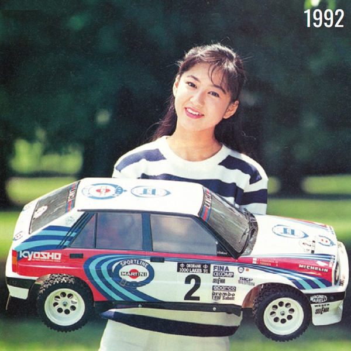

京商 1/5スケール ランチアデルタ インテグラーレ16V

引用元画像：京商公式60年史
📋 基本情報
| メーカー | 京商（Kyosho） |
|---|---|
| 機種名 | 1/5スケール ランチアデルタ インテグラーレ16V（Lancia Delta Integrale 16V） |
| シャーシ略称 | 1/5スケール ランチアデルタ インテグラーレ16V |
| 型番 | 詳細不明 |
| 発売時期 | 1992年 |
| 価格 | 詳細不明（当時の高級モデル） |
| 生産状況 | 生産終了 |
| カテゴリー | ラジコンカー（1/5スケール 22ccガソリンエンジン） |
| サブカテゴリー | ラリーカー（ビッグスケールカー） |
| シリーズ | 1/5スケール ガソリンエンジンシリーズ |
📏 シャーシスペック
| スケール | 1/5スケール |
|---|---|
| 全長 | 約800mm～900mm（推定） |
| 全幅 | 約350mm～400mm（推定） |
| 全高 | 約300mm～350mm（推定） |
| エンジン | 22ccガソリンエンジン |
| 全備重量 | 約5,000g～7,000g（推定） |
| シャーシ構造 | 新開発シャーシ（パワーと大きさに負けない剛性設計） |
⚙️ 駆動系
| 駆動方式 | 4WD（推定） |
|---|---|
| エンジン | 22ccガソリンエンジン（実車さながらのパワーユニット） |
| 燃料 | ガソリン（ニトロメタノール燃料ではなく一般ガソリン） |
| トランスミッション | 詳細不明（ビッグスケールカー用の専用設計） |
🔧 サスペンション
| 形式 | 新開発サスペンション（パワーと大きさに対応） |
|---|---|
| フロント | 詳細不明（大型オイルダンパー搭載推定） |
| リア | 詳細不明（大型オイルダンパー搭載推定） |
| ステアリング | 詳細不明（実車ラリーカーを意識した設計） |
💡 特徴
22ccガソリンエンジンを搭載した迫力のビッグカー
- 22ccのガソリンエンジンをパワーユニットに据えた巨大なスケールカー
- 新しいアウトドアレジャーを提唱する革新的なコンセプト
- パワーと大きさに負けないシャーシを新開発
- 軽快な走りを披露する高性能マシン
実車ランチアデルタ インテグラーレ16Vを忠実に再現
- 1989年～1992年のWRC（世界ラリー選手権）で活躍した名車をモデル化
- ランチア・デルタ HF インテグラーレ 16Vの特徴的なブリスターフェンダーを再現
- 4バルブエンジン搭載の実車をイメージした設計
- WRCマニュファクチャラーズ・チャンピオン（1987年～1991年5年連続）の栄光を持つ実車
新開発シャーシによる高い走行性能
- 22ccガソリンエンジンのパワーに負けない剛性設計
- 1/5スケールの大型ボディに対応した専用シャーシ
- アウトドアでの走行を想定した耐久性
- 軽快な走りを実現する最適化された重量配分
1992年発売の歴史的モデル
- 京商が提唱した新しいアウトドアレジャーの形
- 22ccガソリンエンジン搭載という前例のない挑戦
- 1/5スケールという迫力のサイズ感
- 実車ラリーカーの雰囲気を忠実に再現
実車ランチアデルタの歴史
- 1989年：デルタ HF インテグラーレ 16V登場（4バルブエンジン搭載）
- 1987年～1991年：WRCマニュファクチャラーズ・チャンピオン5年連続制覇
- 1992年：デルタ HF インテグラーレ・エヴォルツィオーネ登場
- ブリスターフェンダー、リアウイング、多数のインテークなど特徴的なデザイン
🔧 ぽすとそに工房での修理実績
修理難易度
★★★★★（非常に難しい）
残存する個体やパーツが極端に少なく、レストアしたくてもなかなかできない車両です。1992年発売の希少モデルで、22ccガソリンエンジンという特殊性も修理を困難にしています。
よくある故障・注意点
- パーツ供給が完全に停止しており、部品入手が極めて困難
- 22ccガソリンエンジンの部品入手が不可能
- 大型シャーシのプラスチック部品の劣化・脆化
- 金属部品の錆・腐食（特にエンジン周辺）
- フューエルタンクの劣化・亀裂（ガソリン対応タンクの劣化）
- 大型サスペンションダンパーのオイル漏れ
- 駆動系部品の摩耗（大出力エンジンによる負荷）
修理のポイント
- パーツが入手できないため、現状維持が最優先
- 22ccガソリンエンジンの代替品が存在しない
- 現代の1/5スケール用パーツで代用できる場合もあるが、適合性の確認が必須
- 3Dプリンターでの部品製作も選択肢の一つだが、強度が課題
- フューエルシステムの完全なオーバーホールが必要な場合が多い
- オリジナルパーツを維持することがコレクター価値を保つ鍵
その他の特徴
- 1992年発売の極めて希少なコレクターズアイテム
- 22ccガソリンエンジン搭載という前例のない挑戦的なモデル
- 実車ランチアデルタ インテグラーレ16VのWRC栄光時代を象徴
- 現存する個体数が極めて少なく、市場価値が非常に高い
- レストア困難だが、保存状態の良い個体は博物館級の価値
- 京商の技術力と挑戦精神を示す歴史的モデル